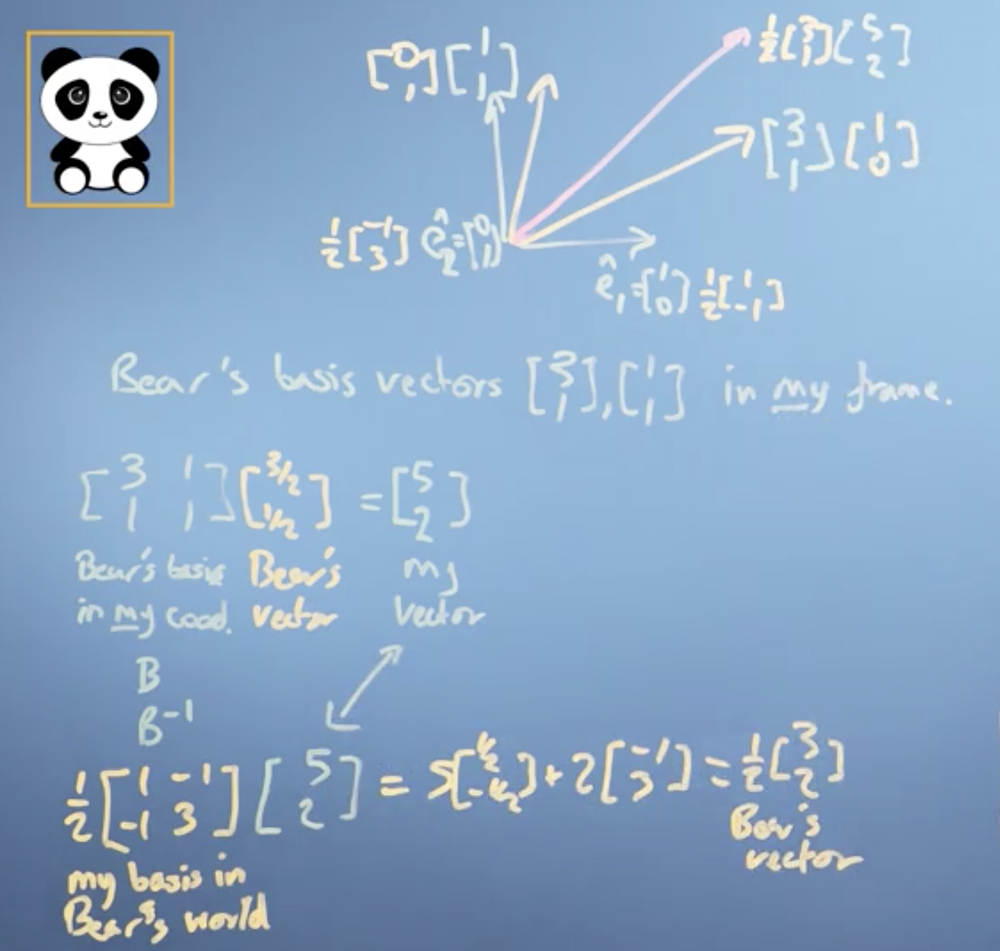
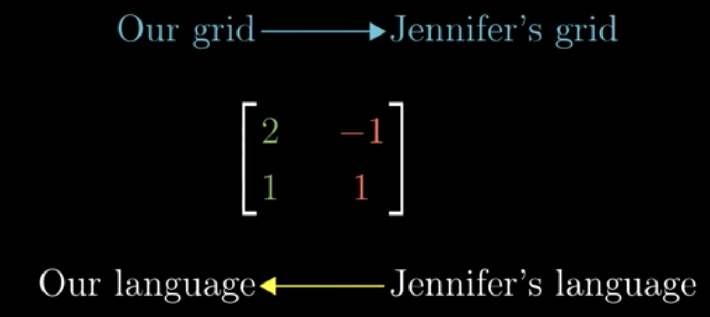
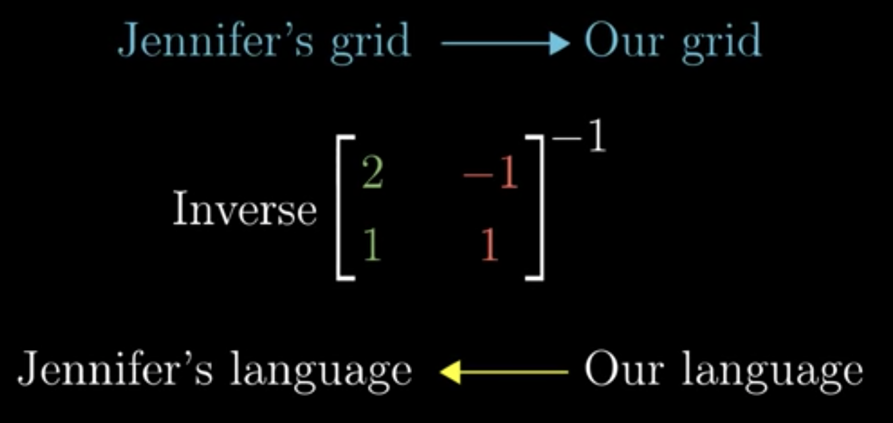
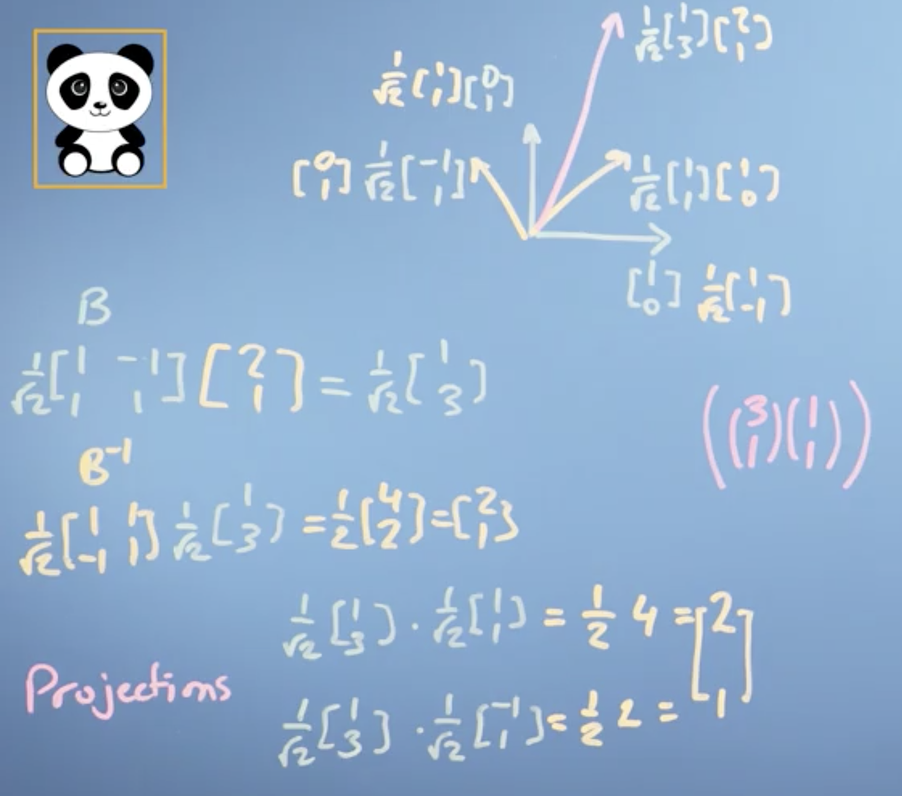
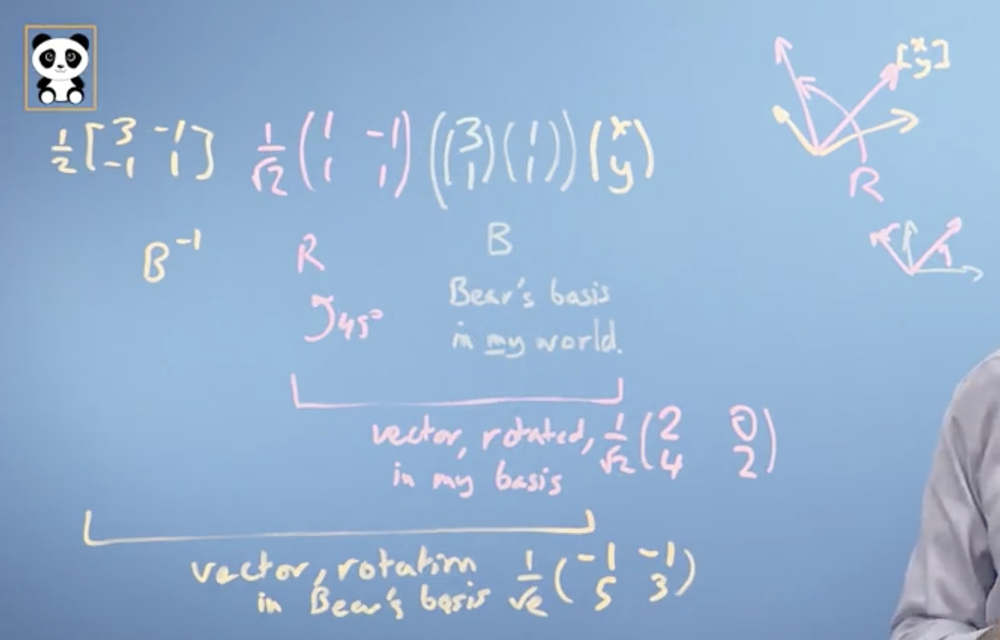
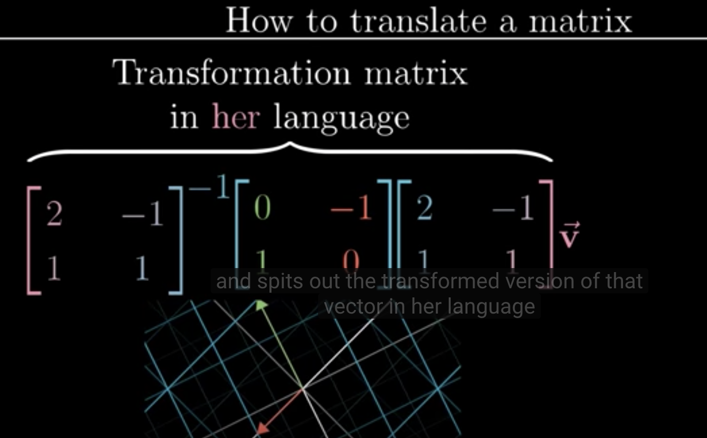

学习目标
- 把矩阵看成是一种操作
- 把做变换的矩阵与其另外一组基联系起来
- 基于这些transformation matrices来写代码实现这些映射
- 写代码找到标准正交基
矩阵是一种映射
To-DO…(这部分恐怕得参考 Gilbert strang的教材和我的笔记去完善。。)
矩阵变换-> 将向量映射到新的基
Matrices changing basis
前面讲过，
columns of transformation matrix are the axis of the new basis vector of the mapping in the old coordinate.我们现在研究的重点换一下：如何把一个向量从一个 set of basis vectors 变换到另一个 set of basis vectors。
换句话说，就是研究一个向量在不同的坐标系间如何转换？如下图，

现在做一些说明：
$$
\begin{align}
&\text{one world} \leftrightarrow \text{one set of basis vectors} \leftrightarrow \text{one coordinate}\\
&\text{My world}: \text{the set of basis vectors is } {\vec e_1=\begin{bmatrix}1\\ 0 \end{bmatrix}, \vec e_2=\begin{bmatrix}0\\ 1 \end{bmatrix}}.\\
&\text{Bear’s world}: \text{the set of basis vectors is }: {\vec e_{1}^{\prime}=\begin{bmatrix}3\\ 1\end{bmatrix}, \vec e_2^\prime=\begin{bmatrix}1\\ 1\end{bmatrix}}.\text{(in my coordinate)}
\end{align}
$$
上面的话说的意思是：在我的眼里，看bear’s basis vectors 是$\begin{bmatrix}3\\1\end{bmatrix}, \begin{bmatrix}1\\1\end{bmatrix}$, 但是在bear 的眼里看它自己的basis vectors 是$\begin{bmatrix}1\\0\end{bmatrix},\begin{bmatrix}0\\1\end{bmatrix}$. 这很好理解，因为所谓基张成整个space的意思就是，基是整个space 的基础度量。空间中任何向量（点）都是由基向量线性组合而成的，其大小、方向 都是相对于basis vectors来讲的，因此 basis vector 对于同一空间中的其他向量来说就是相当于”unit vector”.
我们的问题：
- 在 Bear’s world 有一个向量 $\color{blue}{\vec v_b=\frac{1}{2}\begin{bmatrix}3\\1\end{bmatrix}}$, 求他在My world 中的坐标（表示）$\color{red}{\vec v_{my}}$是什么？
- 在 My world 中的向量 $\color{red}{\vec v_{my}}$ 在 Bear’s world 中是什么？
根据之前的说明，在My world 的坐标系下，Bear‘s transformation matrix 是 $\mathbf{B}=\begin{bmatrix}3 & 1\\1&1\end{bmatrix}$.
因此 $\begin{bmatrix}3&1\\1&1\end{bmatrix}\color{blue}{\vec v_b}=\begin{bmatrix}3&1\\1&1\end{bmatrix} \color{blue}{\begin{bmatrix}\frac{3}{2}\\ \frac{1}{2} \end{bmatrix}}=\color{red}{\begin{bmatrix}5\\2\end{bmatrix}}=\color{red}{\vec v_{my}}$
上式把Bear’s world 的向量变换到 My world.
我们现在考虑反方向的变换：如何把一个My world 的向量变换到Bear’s world? 与之前类似（Bear‘s world的基向量在我们坐标系的表示$\mathbf{B}$），对应地就需要My world 的基向量在Bear’s world的表示（坐标））.
我们之前使用$\mathbf{B}$ 把一个 Bear’s world 的向量变换到 My world中，我们现在要进行一个逆过程，自然是使用$\mathbf{B}^{-1}$.
$\mathbf{B}^{-1}\color{red}{\vec v_{my}}=\mathbf{B}^{-1}\mathbf{B}\color{blue}{\vec v_b}=\color{blue}{\vec v_{b}}$ 即：
$\frac{1}{2}\begin{bmatrix}1&-1\\ -1&3 \end{bmatrix}\color{red}{\begin{bmatrix}5\\2\end{bmatrix}}=\color{blue}{\begin{bmatrix}\frac{3}{2}\\ \frac{1}{2}\end{bmatrix}}$
其实，我们只是回答了如何将我们coordinate 中的一个vector 如何变换到 Bear’s coordinate，并没有回答上面的$\mathbf{B}^{-1}$ 其本质是什么？
根据我们之前讲过的内容，我们知道 $\mathbf{B}^{-1}$ 是一个transformation matrix, 它的列$\begin{bmatrix}\frac{1}{2}\\ -\frac{1}{2}\end{bmatrix}，\begin{bmatrix}-\frac{1}{2}\\ \frac{3}{2}\end{bmatrix}$ 是basis vectors，我们只是不知道它是谁的basis vectors 在什么coordinate 下？
其实，$\color{red}{\vec v_{my}}$ 是我们坐标系下的向量，最终的$\color{blue}{\vec v_b}$ 是Bear‘s coordinate 下的向量，由此可见$\mathbf{B}^{-1}$ 是 My basis in Bear’s world!
可总结为如下图所示的关系:
Changing of basis matrix changes bear’s basis into my coordinate,

Then you inverse the changing of basis matrix, this changes my basis into bear’s coordinate(columns of this inverse of changing of basis matrix are my basis vectors in bear’s coordinate),

一种特殊的基变换

如果 basis of my world 以及 basis of bear’s world 都是正交的，我们可以使用projection 来做 changing of basis.
⚠️， 上图中的basis vectors 都是 unit vector。在实际计算中记得做 normalization。（参考：二.向量是空间中移动的对象一课中 基变换->坐标系统 一节的内容）
在改变后的基上做线性变换
这节要回答的问题是：在 My world 中做一个linear transformation such as rotation, 在 Bear‘s world 中是如何看待这个变换的？过程如下图，

现在对上述问题具体化:
已知
- Bear’s basis in My world is: $\mathbf{B}=\begin{bmatrix}3&1\\1&1\end{bmatrix}$.
- 在 Bear’s world中的一个向量 $\vec v_b = \begin{bmatrix}x\\y\end{bmatrix}$.
- 我们不知道这个transformation matrix 在 Bear’s world中是什么样子，但是我们知道在 My world 中的这个变换是$\mathbf{R}，$ e.g. for rotation，$\mathbf{B}=\begin{bmatrix}\end{bmatrix}$
问题：这个transformation matrix 在 Bear’s world 中是什么样子？或者等价问题，The vector in bear’s world is transformed by the transformation(described in my world), what does it look like in bear’s world?
解决方案如下，
- 首先$\mathbf{B}$ 将在 Bear’s world 中的向量 $\color{blue}{\vec v_b=\begin{bmatrix}x\\y\end{bmatrix}}$ 转换成 My world中的向量$\color{red}{\vec v_{my}}$。这是前面讲过的内容。
- 然后用transformation matrix in My world $\mathbf{R}$ 来对$\color{red}{\vec v_{my}}$ 做 transform，得到 transformed version of $\color{red}{\vec v_{my}}$, 记为：$\color{red}{\vec v_{my}^{transformed}}$.
- 再用 My basis in Bear’s world- Inverse of Bear’s transformation matrix $\mathbf{B}$ , i.e. $\mathbf{B}^{-1}$，to transform the $\color{red}{\vec v_{my}^{transformed}}$ back to Bear’s world, get $\color{blue}{\vec v_{b}^{transformed}}$.
上述三个过程可总结为(从右向左看下述公式)，
$$
\color{blue}{\vec v_{b}^{transformed}}=\mathbf{B}^{-1}\color{red}{\mathbf{R}}\mathbf{B}\color{blue}{\vec v_b}\\
\color{red}{\text{Analogy: Considering the same tranformation/matrix, }\mathbf{R} \text{ for My world is in analogy with }\\ \mathbf{B^{-1}RB } \text{ for Bear’s world, means :}} \\
\mathbf{R}\vec v_{my} =\vec v_{my}^{transformed}\\
(\mathbf{B^{-1}RB})\vec v_b=\vec v_b^{transformed}\\
$$
所以，the same transformation in Bear’s world is: $\mathbf{B^{-1}RB}$.
下图总结这个过程总结的很好，采用拿来主义:

更加形象、精彩的解释在这里（需要翻墙）。
总结：
$\mathbf{B^{-1}RB}$ do the transformation translation from my world into the world of the new basis system. 它就是我们空间中的变换 $\mathbf{B}$ 在新空间中的存在形式。
怎么确定基变换的方向？
我们知道 $\mathbf{B^{-1}RB}$ 使得我们空间中的变换$\mathbf{R}$ 可以在另一个空间体现，它的作用是：对另一个空间中的向量（在该空间坐标系下的表示），通过$\mathbf{B}$（-另一个空间的基在我们坐标系下的表示）将其转换成我们空间坐标系下的表示，然后施以我们空间中的变换$\mathbf{R}$ ，最后通过$\mathbf{B^{-1}}$(我们空间的基在另一个空间坐标系下的表示)转换回另一个空间。简而言之上述公式回答了：
我们空间有一个变换$\mathbf{R}$, 其在另一个空间中是何种存在。
可见，上述对于公式起到了一个“翻译”作用，是:my world -> a new world
那如果我们需要从: new world-> my world 的“翻译”过程呢？
使用的公式为：$\mathbf{BRB^{-1}}$ （注意，两个公式中各个字母的含义根据不同描述可能有所变化！）
具体问题是这样的：现有一个我们空间的向量, 在我们坐标系下的表示为 $\vec v_{my}$, 现在我们像对其做一个变换-比如reflection。 但是我们发现直接计算，复杂度太大。我们发现在其他空间下这个变换的形式很简单，为$\mathbf{R}$，便于计算。因此我们需要将向量$\vec v_{my}$ 变换到另一个空间，然后使该空间的变换 $\mathbf{R}$ 来作用于它，然后将结果再次变换到我们坐标系下，从而达到了我们最初的目的。
我们把另一个空间代称为:Bear’s world, 计算过程如下
$$
\begin{align}
& \mathbf{B^{-1}}\vec v_{my} =\vec v_{b}\\
& \mathbf{R}\vec v_b = \vec v_b^{transformed} \\
& \mathbf{B}\vec v_b^{transformed} = \vec v_{my}^{transformed}
\end{align}
$$
总结起来即为：
$$
\color{red}{\vec v_{my}^{transformed}}=\mathbf{B}\color{blue}{\mathbf{R}}\mathbf{B^{-1}}\color{red}{\vec v_{my}}
$$
现在问题来了？什么时候我们需要: my world-> new world, 什么时候需要 new world-> my world? 决定的标准在于计算的便利性。哪个路径方便于我们计算，我们就采用相应的基变换的方式，在那个空间下计算，然后将计算结果再变换回来即可。
变换是否可逆
基->正交基
Matrix: 矩阵的列是“一组新的基向量” 在我们坐标系中的表示。如果矩阵的列两两正交，那么由他的列所构成的基就是正交基，如果这些列还是单位向量，那么这个矩阵的列就构成了一组标准正交基。这个矩阵叫做正交矩阵。
正交矩阵一定可逆！
$\mathbf{U}$ is a orthogonal matrix, then $\mathbf{UU^{T}=U^TU=I}$, 也就意味着 $\mathbf{U^{-1}=U^T}$
$\det(\mathbf{U})=\pm 1$ , 因为正交矩阵每一列都是 unit vector, 没有改变 the volume/area of the space.(但是可能改变了方向，因此行列式可能是-1)
正交矩阵还有一个可贵的性质：正交变换不改变向量的2-范数, i.e. $\Vert \mathbf{U}\vec x\Vert =\Vert \vec x \Vert$.
$$
\begin{align}
\Vert \mathbf{U}\vec x\Vert ^2 &= (\mathbf{U}\vec x)^T(\mathbf{U}\vec x)\\
&=\vec x^T \mathbf{U}^T \mathbf{U}\vec x\\
&=\vec x^T\vec x \\
&=\Vert \vec x \Vert^2
\end{align}
$$
正交化
Gram-schmit Process
标准正交基有很多优良的性质：
- 我们可以方便的用projection做线性变换
- 以这些基为列构成的矩阵-正交矩阵，有很多好的性质比如：$\det(\mathbf{U})=1,\mathbf{U^{-1}=U^T}$
因此，当我们面对一组仅仅是线性无关的vectors（可以作为某个space 的基）时，我们希望能够将这组linear independent vectors 转换成 orthogonal vectors.
其流程如下，
线性无关 ${v_1,v_2,…,v_n}$ -> 正交 ${v_1^\prime,v_2^\prime …,v_n^\prime}$ -> 标准正交 ${\frac{v_1^\prime}{\Vert v_1^\prime \Vert},…,\frac{v_n^\prime}{\Vert v_n^\prime \Vert} }$, 表示为${e_1,e_2,..,e_n}$
正交化是核心。
Gram-schmit Process:
$$
\begin{align}
&v_1^\prime = v_1\\
&v_2^\prime = v_2 - \text{Proj}_{v_1^\prime} v_2 = v_2 - \frac{v_2\cdot v_1^\prime}{\Vert v_1^\prime\Vert ^2}v_1^\prime \\
&v_3^\prime = v_3 - \text{Proj}_{v_1^\prime}v_3 - \text{Proj}_{v_2^\prime}v_3= v_3 - \frac{v_3\cdot v_1^\prime}{\Vert v_1^\prime \Vert ^2} v_1^\prime - \frac{v_3\cdot v_2^\prime}{\Vert v_2^\prime \Vert ^2} v_2^\prime \\
&…
\end{align}
$$
Then we normalize the set of orthogonal vectors:
$$
\begin{align}
&e_1 = \frac{v_1^\prime}{\Vert v_1^\prime \Vert} \\
&e_2 = \frac{v_2^\prime}{\Vert v_2^\prime \Vert}\\
&… \\
&e_n = \frac{v_n^\prime}{\Vert v_n^\prime \Vert}
\end{align}
$$
最后得到的向量集: ${e_1,e_2,…,e_n}$ 就是标准正交基。
小插曲
我们观察(向量)投影公式：
$\text{Proj}_{\vec v}\vec u=\frac{\vec u \cdot \vec v}{\Vert \vec v\Vert ^2}\vec v$
分母中有一个 $\Vert \vec v \Vert ^2 = \vec v^T \vec v$ ,分子中的$\vec u \cdot \vec v = \vec v ^T\vec u$
那么
$$
\begin{align}
\text{Proj}_{\vec v} \vec u &= \frac{\vec v ^T\vec u}{\vec v ^T \vec v} \vec v \\
&=\vec v \frac{\vec v ^T\vec u}{\vec v ^T \vec v} \text{ (scalar multiplication)}\\
&=\frac{\vec v \vec v ^T}{\vec v ^T \vec v}\vec u \text{ (associativeness of matrix multiplication)}
\end{align}
$$
我们把上面公式最后一项中的单独看，
$$
\mathbf{P}=\color{blue}{\frac{\vec v \vec v ^T}{\vec v ^T \vec v}}
$$
$\mathbf{P}$ 称为将 $\vec u$ 向 $\vec v$ 方向投影的 Projection Matrix，这就将投影从几何概念提升到了线性变换的层次。也即是说，在线性变换的概念中，一个向量的投影是什么呢？就是经过某个 Projection Matrix 变换之后的结果。（当然，这是针对将向量向另一个向量投影的情况，此外还有将向量向一个平面或超平面投影的情况，那个时候projection matrix 的概念是类似的，不过将公式中的向量 $\vec v$ 换成了一个矩阵$\mathbf{A}$, 那是的$\mathbf{P=A(A^TA)^{-1}A^T}$, 其作用是将向量投影到矩阵$\mathbf{A}$ 的列空间）
实际上，我们通过Gram-Schmit Process 把一个矩阵正交化，等同于对矩阵做分解:
$$
\mathbf{A=QR}
$$
其中$\mathbf{Q}$ 是一个正交矩阵。